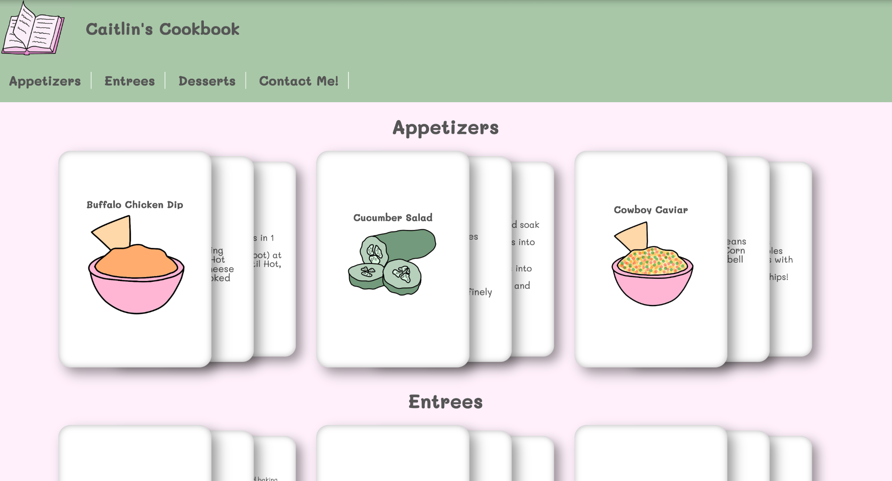
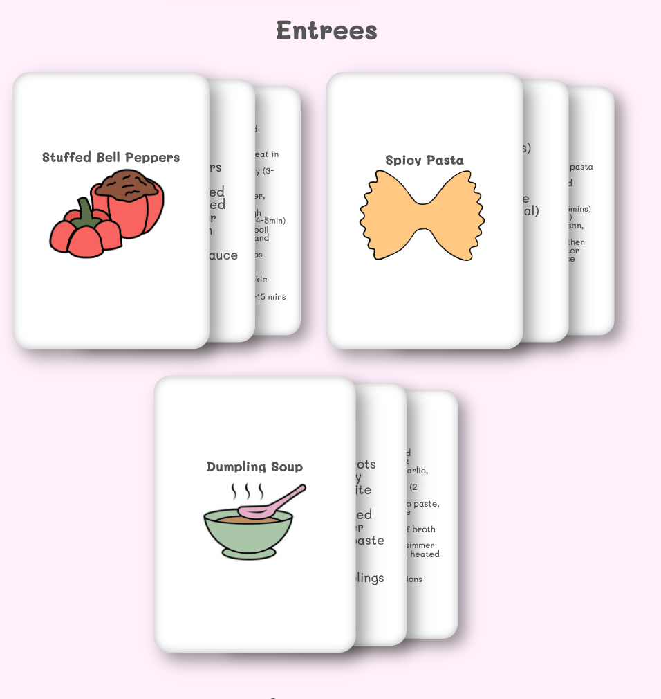
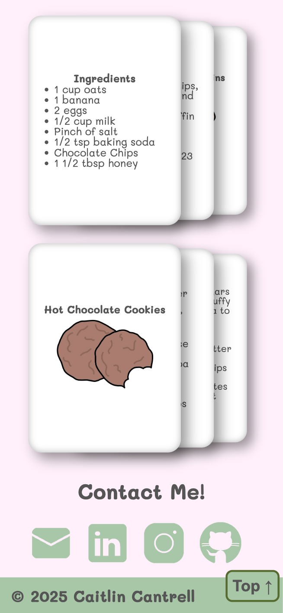

Description
This website showcases all of my favorite delicious recipes. There are a number of Appetizers, Entrees, and Desserts.
This was my first personal project, and I really wanted to showcase the new frontend things I had been learning at the time. I love the personality that this website has. I really wanted to focus on accessibility. Therefore, the website is screenreader accessible, keyboard navigation friendly, contains 3 different views, and is clear of errors (Tested on Wave, Axe, etc.).
Key Features
- CSS, HTML, and JavaScript
- Hand drawn images with personally tested recipes
- Mobile, Tablet, and Desktop views
- Screenreader accessible
- Keyboard navigation friendly.


